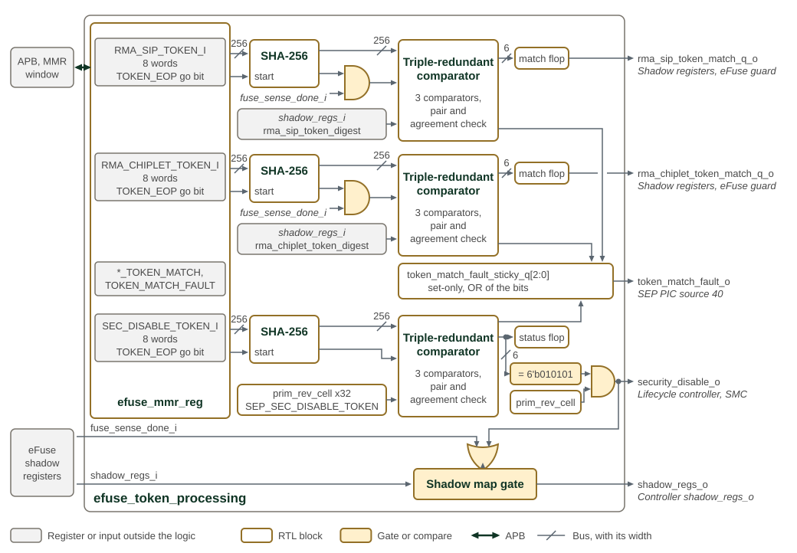

Token Processing
SEP uses 256-bit tokens to authorize RMA lifecycle transitions and emergency security disable. The OTP controller hashes each submitted token with SHA-256 and compares the digest with the expected value. Plaintext tokens are held in three separate, non-scannable eight-word arrays in the eFuse MMR block. These arrays have no reset; reset is not a token-erasure operation.
Token Generation, Storage and Provisioning
Generate and retain plaintext tokens within a hardware security module (HSM), using its secure random-generation and derivation facilities. Keep token processing inside the HSM except for final provisioning, and protect transfer to the manufacturing tester. Provision the RMA token digests, not plaintext tokens, into OTP at manufacturing test. Provisioning policy may use a common token or a distinct token per device; the matching mechanism supports either.
Track each token and its SHA-256 digest separately. Token confidentiality and entropy protect authorization; expected-digest integrity prevents substitution of a digest for a token an attacker knows. The hardware-embedded SEC_DIS digest is common to devices using that design. Bind it under controlled implementation procedures; it does not require the plaintext token in the RTL database.
Token Matching Mechanism and Attack Countermeasures
| Token | Purpose | Expected digest |
|---|---|---|
RMA_SIP_TOKEN |
Authorize SiP RMA transitions |
|
RMA_CHIPLET_TOKEN |
Authorize chiplet RMA transitions |
|
SEC_DIS_TOKEN |
Emergency debug access to a part whose fuse sensing fails |
Hardware constant, independent of OTP |
Each token has a dedicated SHA-256 engine and three redundant digest comparators:
match = (SHA256(token[255:0]) == expected_digest[255:0])Hashing is sequential; the digest comparison is combinational. The computed digest and its valid bit survive reset. A new start clears validity; hash completion replaces the digest. Test enable freezes those retained latches. The presented token and expected digest must not enter scannable storage.
RMA comparisons require both a valid computed digest and completed fuse sensing,
because their expected values come from OTP shadows. SEC_DIS requires only a
valid digest: its expected value is implemented in gates, so a SEC_DIS match
holds before fuse sensing completes. A match forces feature control on, stops
fuse sensing, and opens eFuse shadow-map reads. It does not release SEP reset;
the IC_RESET sep_reset_n override does. The
SEC_DIS recovery sequence
is in the Programmer’s Guide. SEC_DIS follows the feature-control rules in the
Lifecycle Controller chapter, with the metal-programmable enable also required.
The design requirement is A0-only use and permanent removal by a metal-mask ECO
in later A1/B0 revisions; this is not a software-disable mechanism. See
Security Disable (SEC_DIS).
Token Submission
SEP software or JTAG submits tokens through the eFuse MMR interface, subject to its access policy. Register names and start bits are:
| Eight-word input array | TOKEN_EOP bit |
Result register |
|---|---|---|
|
0 |
|
|
8 |
|
|
16 |
|
Index 0 of an input array holds token[31:0] and index 7 holds
token[255:224]; the hash engine consumes index 7 first, down to index 0,
without a byte swap. A write of 1 to a TOKEN_EOP bit generates a start pulse,
and the engine then streams the array rather than taking a snapshot. RMA
results remain idle until fuse sensing completes. The
token submission sequence
is in the Programmer’s Guide.
There is no submission queue: the feeder accepts a new operation only while idle. Starting a hash clears retained digest validity, so comparison returns idle while the new digest is unavailable. The result register follows the comparator through a clocked output stage; writing the token words alone does not invalidate the previous result or launch a comparison.
| Result | Six-bit value | Meaning |
|---|---|---|
Idle |
|
No valid comparison; hashing or fuse sensing may be pending |
Match |
|
All three comparators report equal digests |
Mismatch |
|
All three comparators report unequal digests |
Error |
|
A differential-pair or comparator-agreement fault is present |
Reset clears the registered result and sticky fault flags, but does not erase the input arrays, retained digest or digest-valid state. A retained digest can therefore produce a result again after reset once its comparison prerequisites hold, so reset alone does not revoke a prior token authorization.
Matching Logic Countermeasures
The three comparators provide differential outputs. When comparison is valid,
each pair must contain opposite values and all three instances must agree.
A collapsed pair or disagreement raises a redundancy fault and forces the
current comparator result to 0x3f, which does not satisfy a match check.
This is not majority voting: two matching instances cannot overrule a third.
Each fault also sets a software-read-only flag in TOKEN_MATCH_FAULT: bit 0
for SiP RMA, bit 8 for chiplet RMA and bit 16 for SEC_DIS. These flags remain
set until reset and combine into SEP CPU PIC source 40; there is no
write-one-to-clear operation to deassert the source. See
SEP CPU Interrupt Vector Map.
The sticky flag records fault history; it does not latch the comparator into an error state. A later valid comparison can report match or mismatch while the fault flag and interrupt remain asserted.
The detector does not cover common-mode faults. If all three instances flip in the same way while retaining legal differential pairs, they still agree. Inverting a mismatch can therefore produce an undetected match (fail-open); inverting a match produces a mismatch. The countermeasure detects collapsed pairs and disagreement, not every possible fault-injection outcome.
SEP token processing shows the processing path. The six-bit RMA match codes are checked by the lifecycle and fuse-programming consumers. SEC_DIS has a separate bypass output qualified by the revision enable.

Each of the three rows in SEP token processing is one token lane,
from its token array and go bit in efuse_mmr_reg, through its SHA-256 engine,
to its comparator. The expected digests and fuse_sense_done_i are named at
their point of use; both come from the eFuse shadow registers at the lower
left. fuse_sense_done_i gates only the two RMA comparators. The comparators'
match codes and the sticky fault bits are also readable in the
*_TOKEN_MATCH and TOKEN_MATCH_FAULT status registers. The RMA_CHIPLET match
line crosses the RMA_SIP fault line without connecting; the gap marks the
crossing.
Post Token Matching Handling
An RMA match authorizes a lifecycle change; it does not itself burn a fuse.
The controller gates RMA fuse programming with the corresponding token match.
For shadow-state transitions, software can request an explicit update, or
TRANSIENT_RMA_EN can enable automatic updates. The chiplet-RMA shadow
transition also requires RMA_SIP to be established first. See
OTP Fuse Controller
for lock exceptions and transition rules. SEC_DIS instead activates the
emergency bypass while its match and revision-enable conditions hold.